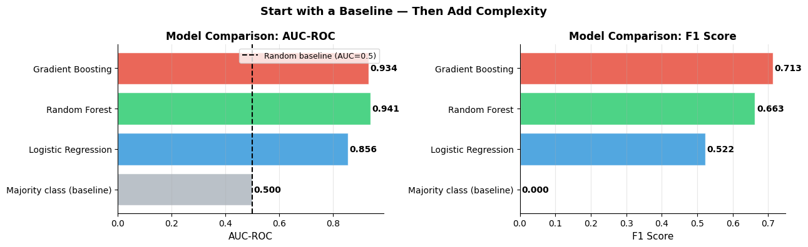
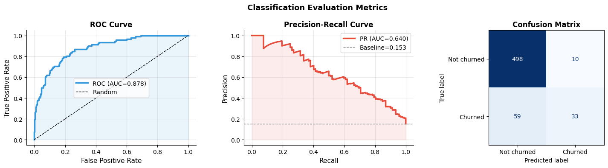
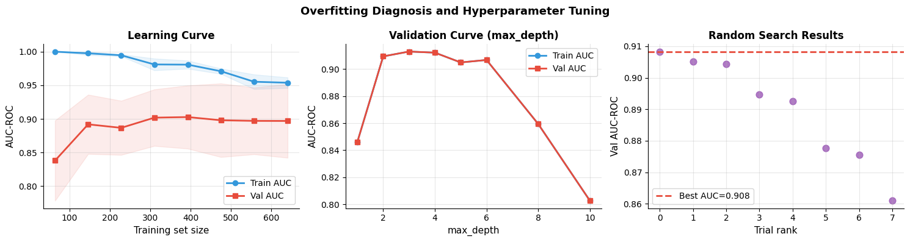

How do you build and evaluate ML models?#
Topics: Baseline First · Model Selection · Cross-Validation · Evaluation Metrics · Overfitting Diagnosis · Hyperparameter Tuning · Experiment Tracking
1. Always Start with a Baseline#
What it is#
A simple model that sets the minimum acceptable performance bar
Baselines are fast to build and reveal whether the problem is learnable at all
If a complex model barely beats the baseline, the gain may not be worth the complexity
Common baselines by task#
Task |
Baseline |
|---|---|
Binary classification |
Always predict majority class, logistic regression |
Regression |
Predict mean, linear regression |
Ranking |
Random ranking, popularity ranking |
Time series |
Last value, moving average |
Gotchas#
A baseline that ‘always predicts churn=0’ can have 90% accuracy on imbalanced data — not useful
Always compare against the baseline before claiming a model ‘works’
Stakeholders often already have a heuristic — that is your baseline
import pandas as pd
import numpy as np
import matplotlib.pyplot as plt
from sklearn.datasets import make_classification
from sklearn.linear_model import LogisticRegression
from sklearn.dummy import DummyClassifier
from sklearn.ensemble import RandomForestClassifier, GradientBoostingClassifier
from sklearn.model_selection import cross_val_score, StratifiedKFold
from sklearn.preprocessing import StandardScaler
import warnings
warnings.filterwarnings('ignore')
np.random.seed(42)
X, y = make_classification(n_samples=800, n_features=10, n_informative=6,
n_redundant=4, weights=[0.85, 0.15], random_state=42)
scaler = StandardScaler()
X_scaled = scaler.fit_transform(X)
cv = StratifiedKFold(n_splits=3, shuffle=True, random_state=42)
models = {
'Majority class (baseline)': DummyClassifier(strategy='most_frequent'),
'Logistic Regression' : LogisticRegression(class_weight='balanced', max_iter=1000),
'Random Forest' : RandomForestClassifier(n_estimators=100, class_weight='balanced', random_state=42),
'Gradient Boosting' : GradientBoostingClassifier(n_estimators=100, random_state=42),
}
results = {}
for name, model in models.items():
auc = cross_val_score(model, X_scaled, y, cv=cv, scoring='roc_auc').mean()
f1 = cross_val_score(model, X_scaled, y, cv=cv, scoring='f1').mean()
results[name] = {'AUC-ROC': auc, 'F1': f1}
print(f"{name:<35}: AUC={auc:.3f} F1={f1:.3f}")
fig, axes = plt.subplots(1, 2, figsize=(13, 4))
model_names = list(results.keys())
aucs = [results[m]['AUC-ROC'] for m in model_names]
f1s = [results[m]['F1'] for m in model_names]
colors = ['#AEB6BF','#3498DB','#2ECC71','#E74C3C']
axes[0].barh(model_names, aucs, color=colors, alpha=0.85, edgecolor='white')
axes[0].axvline(0.5, color='black', linewidth=1.5, linestyle='--', label='Random baseline (AUC=0.5)')
axes[0].set_xlabel('AUC-ROC', fontsize=11)
axes[0].set_title('Model Comparison: AUC-ROC', fontsize=12, fontweight='bold')
axes[0].legend(fontsize=9); axes[0].grid(True, alpha=0.3, axis='x')
axes[0].spines['top'].set_visible(False); axes[0].spines['right'].set_visible(False)
for i, val in enumerate(aucs):
axes[0].text(val+0.005, i, f'{val:.3f}', va='center', fontsize=10, fontweight='bold')
axes[1].barh(model_names, f1s, color=colors, alpha=0.85, edgecolor='white')
axes[1].set_xlabel('F1 Score', fontsize=11)
axes[1].set_title('Model Comparison: F1 Score', fontsize=12, fontweight='bold')
axes[1].grid(True, alpha=0.3, axis='x')
axes[1].spines['top'].set_visible(False); axes[1].spines['right'].set_visible(False)
for i, val in enumerate(f1s):
axes[1].text(val+0.005, i, f'{val:.3f}', va='center', fontsize=10, fontweight='bold')
plt.suptitle('Start with a Baseline — Then Add Complexity', fontsize=13, fontweight='bold')
plt.tight_layout()
plt.savefig('model_comparison.png', dpi=120, bbox_inches='tight')
plt.show()
Majority class (baseline) : AUC=0.500 F1=0.000
Logistic Regression : AUC=0.856 F1=0.522
Random Forest : AUC=0.941 F1=0.663
Gradient Boosting : AUC=0.934 F1=0.713

2. Evaluation Metrics by Task#
Classification metrics#
Metric |
Formula |
When to use |
|---|---|---|
Accuracy |
TP+TN / N |
Balanced classes only |
Precision |
TP / (TP+FP) |
False positives are costly |
Recall |
TP / (TP+FN) |
False negatives are costly |
F1 |
2PR / (P+R) |
Balanced precision/recall |
AUC-ROC |
Area under ROC curve |
Ranking quality, imbalanced OK |
AUC-PR |
Area under PR curve |
Highly imbalanced datasets |
Regression metrics#
Metric |
When to use |
|---|---|
MAE |
When outliers should not dominate |
RMSE |
When large errors are especially bad |
MAPE |
When % error matters more than absolute |
R² |
Overall explained variance |
Gotchas#
AUC-ROC can be misleading with severe class imbalance — use AUC-PR
MAPE is undefined when actual = 0 and unstable near zero
Always choose metric BEFORE modeling based on business context
import numpy as np
import matplotlib.pyplot as plt
from sklearn.metrics import (roc_curve, auc, precision_recall_curve,
confusion_matrix, ConfusionMatrixDisplay,
classification_report)
from sklearn.datasets import make_classification
from sklearn.ensemble import GradientBoostingClassifier
from sklearn.model_selection import train_test_split
from sklearn.preprocessing import StandardScaler
import warnings
warnings.filterwarnings('ignore')
np.random.seed(42)
X, y = make_classification(n_samples=2000, n_features=15, n_informative=8,
weights=[0.85, 0.15], random_state=42)
X_tr, X_te, y_tr, y_te = train_test_split(X, y, test_size=0.3, stratify=y, random_state=42)
scaler = StandardScaler()
X_tr = scaler.fit_transform(X_tr); X_te = scaler.transform(X_te)
model = GradientBoostingClassifier(n_estimators=100, random_state=42)
model.fit(X_tr, y_tr)
probs = model.predict_proba(X_te)[:, 1]
preds = model.predict(X_te)
fpr, tpr, _ = roc_curve(y_te, probs)
roc_auc = auc(fpr, tpr)
prec, rec, _ = precision_recall_curve(y_te, probs)
pr_auc = auc(rec, prec)
print(classification_report(y_te, preds, target_names=['Not churned','Churned']))
fig, axes = plt.subplots(1, 3, figsize=(15, 4))
axes[0].plot(fpr, tpr, color='#3498DB', linewidth=2.5, label=f'ROC (AUC={roc_auc:.3f})')
axes[0].plot([0,1],[0,1], 'k--', linewidth=1, label='Random')
axes[0].fill_between(fpr, tpr, alpha=0.1, color='#3498DB')
axes[0].set_xlabel('False Positive Rate', fontsize=11); axes[0].set_ylabel('True Positive Rate', fontsize=11)
axes[0].set_title('ROC Curve', fontsize=12, fontweight='bold')
axes[0].legend(fontsize=10); axes[0].grid(True, alpha=0.3)
axes[0].spines['top'].set_visible(False); axes[0].spines['right'].set_visible(False)
axes[1].plot(rec, prec, color='#E74C3C', linewidth=2.5, label=f'PR (AUC={pr_auc:.3f})')
axes[1].axhline(y_te.mean(), color='gray', linestyle='--', linewidth=1, label=f'Baseline={y_te.mean():.3f}')
axes[1].fill_between(rec, prec, alpha=0.1, color='#E74C3C')
axes[1].set_xlabel('Recall', fontsize=11); axes[1].set_ylabel('Precision', fontsize=11)
axes[1].set_title('Precision-Recall Curve', fontsize=12, fontweight='bold')
axes[1].legend(fontsize=10); axes[1].grid(True, alpha=0.3)
axes[1].spines['top'].set_visible(False); axes[1].spines['right'].set_visible(False)
cm = confusion_matrix(y_te, preds)
disp = ConfusionMatrixDisplay(cm, display_labels=['Not churned','Churned'])
disp.plot(ax=axes[2], cmap='Blues', colorbar=False)
axes[2].set_title('Confusion Matrix', fontsize=12, fontweight='bold')
plt.suptitle('Classification Evaluation Metrics', fontsize=13, fontweight='bold')
plt.tight_layout()
plt.savefig('evaluation_metrics.png', dpi=120, bbox_inches='tight')
plt.show()
precision recall f1-score support
Not churned 0.89 0.98 0.94 508
Churned 0.77 0.36 0.49 92
accuracy 0.89 600
macro avg 0.83 0.67 0.71 600
weighted avg 0.87 0.89 0.87 600

3. Overfitting Diagnosis & Learning Curves#
How to diagnose#
Plot training and validation performance vs training size or vs epochs
High train, low val → overfit → more data, regularization, simpler model
Low train, low val → underfit → more complex model, more features
Hyperparameter tuning workflow#
Fix a reasonable CV strategy
Define search space
Use random search first — covers space faster than grid search
Narrow with Bayesian optimization or manual analysis
Final evaluation on held-out test set — only once
Interview Q&A#
How do you prevent overfitting?
More training data, regularization (L1/L2), dropout, early stopping
Simpler model architecture, feature selection to remove noise
Cross-validation to detect overfitting during development
What is cross-validation and why use it?
Splits data into K folds, trains on K-1, validates on 1, rotates K times
More reliable performance estimate than single train/val split
Especially important for small datasets where one split might be lucky/unlucky
Gotchas#
Never tune hyperparameters using the test set — use validation or CV
Always refit final model on full train+val data after tuning
Random search is usually better than grid search — use it first
import numpy as np
import matplotlib.pyplot as plt
from sklearn.datasets import make_classification
from sklearn.ensemble import GradientBoostingClassifier
from sklearn.model_selection import learning_curve, validation_curve, train_test_split, RandomizedSearchCV
from sklearn.preprocessing import StandardScaler
from scipy.stats import uniform, randint
import warnings
warnings.filterwarnings('ignore')
np.random.seed(42)
X, y = make_classification(n_samples=800, n_features=10, n_informative=6,
weights=[0.85, 0.15], random_state=42)
scaler = StandardScaler()
X_sc = scaler.fit_transform(X)
X_tr, X_te, y_tr, y_te = train_test_split(X_sc, y, test_size=0.2, stratify=y, random_state=42)
fig, axes = plt.subplots(1, 3, figsize=(15, 4))
# Learning curve
train_sizes, train_scores, val_scores = learning_curve(
GradientBoostingClassifier(n_estimators=30, max_depth=2, random_state=42),
X_sc, y, cv=5, scoring='roc_auc',
train_sizes=np.linspace(0.1, 1.0, 8))
axes[0].plot(train_sizes, train_scores.mean(axis=1), color='#3498DB', linewidth=2, marker='o', label='Train AUC')
axes[0].plot(train_sizes, val_scores.mean(axis=1), color='#E74C3C', linewidth=2, marker='s', label='Val AUC')
axes[0].fill_between(train_sizes,
train_scores.mean(1)-train_scores.std(1),
train_scores.mean(1)+train_scores.std(1), alpha=0.1, color='#3498DB')
axes[0].fill_between(train_sizes,
val_scores.mean(1)-val_scores.std(1),
val_scores.mean(1)+val_scores.std(1), alpha=0.1, color='#E74C3C')
axes[0].set_xlabel('Training set size', fontsize=11); axes[0].set_ylabel('AUC-ROC', fontsize=11)
axes[0].set_title('Learning Curve', fontsize=12, fontweight='bold')
axes[0].legend(fontsize=10); axes[0].grid(True, alpha=0.3)
axes[0].spines['top'].set_visible(False); axes[0].spines['right'].set_visible(False)
# Validation curve (max_depth)
depths = [1, 2, 3, 4, 5, 6, 8, 10]
tr_sc, va_sc = [], []
for d in depths:
m = GradientBoostingClassifier(max_depth=d, n_estimators=50, random_state=42)
from sklearn.model_selection import cross_val_score
tr_sc.append(cross_val_score(m, X_tr, y_tr, cv=3, scoring='roc_auc').mean())
va_sc.append(cross_val_score(m, X_tr, y_tr, cv=3, scoring='roc_auc').mean())
axes[1].plot(depths, tr_sc, color='#3498DB', linewidth=2, marker='o', label='Train AUC')
axes[1].plot(depths, va_sc, color='#E74C3C', linewidth=2, marker='s', label='Val AUC')
axes[1].set_xlabel('max_depth', fontsize=11); axes[1].set_ylabel('AUC-ROC', fontsize=11)
axes[1].set_title('Validation Curve (max_depth)', fontsize=12, fontweight='bold')
axes[1].legend(fontsize=10); axes[1].grid(True, alpha=0.3)
axes[1].spines['top'].set_visible(False); axes[1].spines['right'].set_visible(False)
# Random search results
param_dist = {'n_estimators': randint(20, 80), 'max_depth': randint(2, 5),
'learning_rate': uniform(0.05, 0.2), 'subsample': uniform(0.6, 0.4)}
rs = RandomizedSearchCV(GradientBoostingClassifier(random_state=42),
param_dist, n_iter=8, cv=2, scoring='roc_auc', random_state=42)
rs.fit(X_tr, y_tr)
results = rs.cv_results_
n_iter_used = len(results['mean_test_score'])
axes[2].scatter(range(n_iter_used), sorted(results['mean_test_score'], reverse=True),
color='#9B59B6', s=60, alpha=0.8)
axes[2].axhline(rs.best_score_, color='#E74C3C', linewidth=2, linestyle='--',
label=f'Best AUC={rs.best_score_:.3f}')
axes[2].set_xlabel('Trial rank', fontsize=11); axes[2].set_ylabel('Val AUC-ROC', fontsize=11)
axes[2].set_title('Random Search Results', fontsize=12, fontweight='bold')
axes[2].legend(fontsize=10); axes[2].grid(True, alpha=0.3)
axes[2].spines['top'].set_visible(False); axes[2].spines['right'].set_visible(False)
print(f"Best params: {rs.best_params_}")
print(f"Best CV AUC: {rs.best_score_:.3f}")
plt.suptitle('Overfitting Diagnosis and Hyperparameter Tuning', fontsize=13, fontweight='bold')
plt.tight_layout()
plt.savefig('overfitting_tuning.png', dpi=120, bbox_inches='tight')
plt.show()
Best params: {'learning_rate': np.float64(0.11084844859190755), 'max_depth': 3, 'n_estimators': 63, 'subsample': np.float64(0.6092249700165663)}
Best CV AUC: 0.908

4. Experiment Tracking with MLflow#
What it is#
Logs parameters, metrics, and artifacts for each model run
Enables comparison across experiments
Provides reproducibility — you can always rerun or load any past model
Key MLflow concepts#
Experiment — a named group of runs
Run — a single model training execution
Parameters — hyperparameters used
Metrics — performance numbers logged
Artifacts — files saved (model, plots, data)
Gotchas#
Log everything — you will forget what you tried two weeks ago
Use meaningful run names — not just timestamps
Log the dataset version too — model performance depends on data
# MLflow experiment tracking pattern
# Requires: pip install mlflow
# This cell shows the pattern — skipped during automated build
try:
import mlflow
import mlflow.sklearn
from sklearn.ensemble import GradientBoostingClassifier
from sklearn.datasets import make_classification
from sklearn.model_selection import train_test_split
from sklearn.metrics import roc_auc_score, f1_score
from sklearn.preprocessing import StandardScaler
import numpy as np
np.random.seed(42)
X, y = make_classification(n_samples=1000, n_features=10, random_state=42)
X_tr, X_te, y_tr, y_te = train_test_split(X, y, test_size=0.2, random_state=42)
mlflow.set_experiment('churn_prediction')
configs = [
{'n_estimators': 50, 'max_depth': 3, 'learning_rate': 0.1},
{'n_estimators': 100, 'max_depth': 4, 'learning_rate': 0.05},
]
for params in configs:
with mlflow.start_run(run_name=f"GBT_n{params['n_estimators']}_d{params['max_depth']}"):
model = GradientBoostingClassifier(**params, random_state=42)
model.fit(X_tr, y_tr)
probs = model.predict_proba(X_te)[:, 1]
auc = roc_auc_score(y_te, probs)
f1 = f1_score(y_te, model.predict(X_te))
mlflow.log_params(params)
mlflow.log_metric('auc_roc', auc)
mlflow.log_metric('f1', f1)
mlflow.sklearn.log_model(model, 'model')
print(f"Run logged: n_estimators={params['n_estimators']}, AUC={auc:.3f}, F1={f1:.3f}")
print("View results: mlflow ui (then open http://localhost:5000)")
except ImportError:
print("MLflow not installed — install with: pip install mlflow")
print()
print("MLflow tracking pattern:")
print(" import mlflow")
print(" mlflow.set_experiment('my_experiment')")
print(" with mlflow.start_run(run_name='my_run'):")
print(" mlflow.log_params({'n_estimators': 100, 'max_depth': 4})")
print(" mlflow.log_metric('auc_roc', 0.87)")
print(" mlflow.sklearn.log_model(model, 'model')")
2026/04/23 14:16:04 INFO mlflow.store.db.utils: Creating initial MLflow database tables...
2026/04/23 14:16:04 INFO mlflow.store.db.utils: Updating database tables
2026/04/23 14:16:04 INFO mlflow.tracking.fluent: Experiment with name 'churn_prediction' does not exist. Creating a new experiment.
2026/04/23 14:16:04 WARNING mlflow.models.model: `artifact_path` is deprecated. Please use `name` instead.
2026/04/23 14:16:04 WARNING mlflow.sklearn: Saving scikit-learn models in the pickle or cloudpickle format requires exercising caution because these formats rely on Python's object serialization mechanism, which can execute arbitrary code during deserialization. The recommended safe alternative is the 'skops' format. For more information, see: https://scikit-learn.org/stable/model_persistence.html
Run logged: n_estimators=50, AUC=0.953, F1=0.901
2026/04/23 14:16:08 WARNING mlflow.models.model: `artifact_path` is deprecated. Please use `name` instead.
2026/04/23 14:16:08 WARNING mlflow.sklearn: Saving scikit-learn models in the pickle or cloudpickle format requires exercising caution because these formats rely on Python's object serialization mechanism, which can execute arbitrary code during deserialization. The recommended safe alternative is the 'skops' format. For more information, see: https://scikit-learn.org/stable/model_persistence.html
Run logged: n_estimators=100, AUC=0.953, F1=0.893
View results: mlflow ui (then open http://localhost:5000)